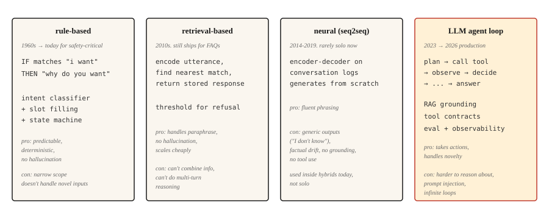

Home / NLP, Foundations to Advanced
Chatbots — Rule-Based to Neural to LLM Agents
ELIZA replied with pattern matches. DialogFlow mapped intents. GPT answered from weights. Claude runs tools and verifies. Each era solved the previous one's worst failure.
- Type
- Learn
- Languages
- Python
- Prerequisites
- Phase 5 · 13 (Question Answering), Phase 5 · 14 (Information Retrieval)
- Time
- ~75 minutes
#The Problem
A user says "I want to change my flight." The system has to figure out what they want, what information is missing, how to get it, and how to complete the action. Then the user says "wait, what if I cancel instead?" and the system has to remember the context, switch tasks, and preserve state.
Conversation is hard for an ML system. The input is open-ended. The output has to be coherent over many turns. The system may need to act on the world (change a flight, charge a card). Every wrong step is visible to the user.
Chatbot architectures have cycled through four paradigms, each introduced because the previous one failed too visibly. This lesson walks them in order. The 2026 production landscape is a hybrid of the last two.
#The Concept

#The scripted half-century, 1950-2001
The first paradigm did not last five years. It lasted fifty. Knowing its arc matters because every system in it is the same machine — match input, emit a canned response, update a little state — and fifty years of adding rules to that machine never produced the general case. That ceiling is why paradigms two through four exist.
1950. Turing sidesteps "can machines think?" by proposing an operational replacement: if an interrogator cannot tell the machine from a person over teletype, the philosophical question is moot. Conversation becomes the field's benchmark before the field has a name.
1956. The name arrives — a summer workshop at Dartmouth coins "artificial intelligence" on the conjecture that every feature of intelligence "can in principle be so precisely described that a machine can be made to simulate it." The proposal budgets two months for substantial progress.
1966. ELIZA ships the reflection trick you build in Step 1: decomposition rules pull fragments from the input, reassembly rules echo them back as questions. Around 200 patterns total, zero state, zero understanding — and users confided in it anyway. Weizenbaum spent the rest of his career alarmed by how little machinery it took.
1972. PARRY, built at Stanford to model paranoia, adds the piece ELIZA lacked: internal state. Numeric variables for fear, anger, and mistrust update on every turn and gate which script fires next, so identical inputs produce different responses depending on the conversation so far. In a blinded transcript test, psychiatrists distinguished PARRY from human patients at chance. It is the direct ancestor of persona conditioning — a system prompt implemented as three floats. The same year, the two bots were pointed at each other over ARPANET: a therapist script interviewing a paranoia state machine, the first bot-to-bot conversation on a network.
1995. ALICE scales the ELIZA recipe with AIML, an XML dialect for pattern-template pairs. Roughly 40,000 hand-written categories, three Loebner Prize wins. It proved the scaling law of rule-based systems: more rules buy coverage, never generality. Every rule is a liability someone must maintain.
2001. SmarterChild puts the recipe in front of 30 million instant-messenger users and adds backend lookups — weather, stocks, movie times — spliced into templates. Squint and it is tool calling wearing a 2001 costume: parse intent, call a service, render the result into the reply.
Fifty years, one mechanism, rising rule counts. The paradigm ended not because anyone disproved it but because the maintenance cost of hand-written state machines grows linearly with coverage while user expectations grow with whatever they saw last week.
Rule-based (ELIZA, AIML, DialogFlow). Hand-authored patterns match user input and produce responses. Intent classifiers route to predefined flows. Slot-filling state machines collect required info. Works brilliantly inside the narrow scope it was designed for. Fails immediately outside it. Still ships in safety-critical domains (banking authentication, airline booking) where hallucination is not tolerated.
Retrieval-based. A FAQ-style system. Encode every pair of (utterance, response). At runtime, encode the user's message and retrieve the nearest stored response. Think Zendesk's classic "similar articles" feature. Handles paraphrases better than rules. No generation, so no hallucination.
Neural (seq2seq). Encoder-decoder trained on conversation logs. Generates responses from scratch. Fluent but prone to generic outputs ("I don't know") and factual drift. Never reliably on topic. The reason Google, Facebook, and Microsoft all had disappointing chatbots in 2016-2019.
LLM agents. A language model wrapped in a loop that plans, calls tools, and verifies outcomes. Not a chatbot with a long prompt. An agent loop: plan → call tool → observe result → decide next step. Retrieval-first grounding (RAG) keeps it from hallucinating. Tool calls let it actually do things. This is the 2026 architecture.
The four paradigms are not sequential replacements. A 2026 production chatbot routes through all four: rule-based for authentication and destructive actions, retrieval for FAQ, neural generation for natural phrasing, LLM agent for ambiguous open-ended queries.
#Build It
#Step 1: rule-based pattern matching
import re
class RulePattern:
def __init__(self, pattern, response_template):
self.regex = re.compile(pattern, re.IGNORECASE)
self.template = response_template
PATTERNS = [
RulePattern(r"my name is (\w+)", "Nice to meet you, {0}."),
RulePattern(r"i (need|want) (.+)", "Why do you {0} {1}?"),
RulePattern(r"i feel (.+)", "Why do you feel {0}?"),
RulePattern(r"(.*)", "Tell me more about that."),
]
def rule_based_respond(user_input):
for pattern in PATTERNS:
m = pattern.regex.match(user_input.strip())
if m:
return pattern.template.format(*m.groups())
return "I don't understand."ELIZA in 20 lines. The reflection trick ("I feel sad" → "Why do you feel sad") is the canonical psychotherapist demo from Weizenbaum 1966. Still instructive.
#Step 2: retrieval-based (FAQ)
This illustrative snippet requires pip install sentence-transformers (which pulls in torch). The runnable code/main.py for this lesson uses a stdlib Jaccard similarity instead, so the lesson runs without external dependencies.
from sentence_transformers import SentenceTransformer
import numpy as np
FAQ = [
("how do i reset my password", "Go to Settings > Security > Reset Password."),
("how do i cancel my order", "Go to Orders, find the order, click Cancel."),
("what is your return policy", "30-day returns on unused items, original packaging."),
]
encoder = SentenceTransformer("sentence-transformers/all-MiniLM-L6-v2")
faq_questions = [q for q, _ in FAQ]
faq_embeddings = encoder.encode(faq_questions, normalize_embeddings=True)
def faq_respond(user_input, threshold=0.5):
q_emb = encoder.encode([user_input], normalize_embeddings=True)[0]
sims = faq_embeddings @ q_emb
best = int(np.argmax(sims))
if sims[best] < threshold:
return None
return FAQ[best][1]Threshold-based refusal is the key design choice. If the best match is not close enough, return None and let the system escalate.
#Step 3: neural generation (baseline)
Use a small instruction-tuned encoder-decoder (FLAN-T5) or a fine-tuned conversational model. Production-unusable on its own in 2026 (contradiction, off-topic drift, factual nonsense), but ships inside hybrid systems for natural phrasing. DialoGPT-style decoder-only models need explicit turn separators and EOS handling to produce coherent replies; a FLAN-T5 text2text pipeline works out of the box for a teaching example.
from transformers import pipeline
chatbot = pipeline("text2text-generation", model="google/flan-t5-small")
response = chatbot("Respond politely to: Hi there!", max_new_tokens=40)
print(response[0]["generated_text"])#Step 4: LLM agent loop
The 2026 production shape:
def agent_loop(user_message, tools, llm, max_steps=5):
history = [{"role": "user", "content": user_message}]
for _ in range(max_steps):
response = llm(history, tools=tools)
tool_call = response.get("tool_call")
if tool_call:
tool_name = tool_call.get("name")
args = tool_call.get("arguments")
if not isinstance(tool_name, str) or tool_name not in tools:
history.append({"role": "assistant", "tool_call": tool_call})
history.append({"role": "tool", "name": str(tool_name), "content": f"error: unknown tool {tool_name!r}"})
continue
if not isinstance(args, dict):
history.append({"role": "assistant", "tool_call": tool_call})
history.append({"role": "tool", "name": tool_name, "content": f"error: arguments must be a dict, got {type(args).__name__}"})
continue
fn = tools[tool_name]
result = fn(**args)
history.append({"role": "assistant", "tool_call": tool_call})
history.append({"role": "tool", "name": tool_name, "content": result})
else:
return response["content"]
return "I could not complete the task in the step budget."Three things to name. Tools are callable functions the LLM can invoke. The loop terminates when the LLM returns a final answer instead of a tool call. The step budget prevents infinite loops on ambiguous tasks.
Real production adds: retrieval-first grounding (inject relevant docs before each LLM call), guardrails (refuse destructive actions without confirmation), observability (log every step), and evaluations (automated checks that agent behavior stays on-spec).
#Step 5: hybrid routing
def hybrid_chat(user_input):
if is_destructive_action(user_input):
return structured_flow(user_input)
faq_answer = faq_respond(user_input, threshold=0.6)
if faq_answer:
return faq_answer
return agent_loop(user_input, tools, llm)
def is_destructive_action(text):
danger_words = ["delete", "cancel", "charge", "refund", "transfer"]
return any(w in text.lower() for w in danger_words)The pattern: deterministic rules for anything destructive, retrieval for canned FAQs, LLM agents for everything else. This is what ships in 2026 customer-support systems.
#Use It
The 2026 stack:
| Use case | Architecture |
|---|---|
| Booking, payment, authentication | Rule-based state machines + slot filling |
| Customer support FAQs | Retrieval over curated answers |
| Open-ended help chat | LLM agent with RAG + tool calls |
| Internal tools / IDE assistants | LLM agent with tool calls (search, read, write) |
| Companion / character chatbots | Tuned LLM with persona system prompt, retrieval on knowledge |
Always use hybrid routing in production. No single architecture handles every request well. The routing layer itself is typically a small intent classifier.
#Failure modes that still ship
Confident fabrication. LLM agent claims it completed an action it did not. Mitigation: verify outcomes, log tool calls, never let the LLM claim to have done something without a successful tool return.
Prompt injection. User inserts text that overrides the system prompt. Ranked LLM01 in the OWASP Top 10 for LLM Applications 2025. Two flavors: direct injection (pasted into the chat) and indirect injection (hidden in documents, emails, or tool outputs the agent reads).
Attack rates vary by scenario. Measured success rates range ~0.5-8.5% across frontier models in general tool-use and coding benchmarks. Specific high-risk setups (adaptive attacks against AI coding agents, vulnerable orchestration) have reached ~84%. Production CVEs include EchoLeak (CVE-2025-32711, CVSS 9.3) — a zero-click data-exfiltration flaw in Microsoft 365 Copilot triggered by an attacker-controlled email.
Mitigations: treat user input as untrusted throughout the loop; sanitize before tool calls; isolate tool outputs from the main prompt; use the Plan-Verify-Execute (PVE) pattern where the agent plans first, then verifies each action against that plan before executing (this stops tool results from injecting new unplanned actions); require user confirmation for destructive actions; apply least-privilege to tool scopes.
No amount of prompt engineering fully eliminates this risk. External runtime defense layers (LLM Guard, allowlist validation, semantic anomaly detection) are required.
Scope creep. Agent goes off-task because a tool call returned tangentially related info. Mitigation: narrow tool contracts; keep the system prompt focused; add evaluations for off-task rate.
Infinite loops. Agent keeps calling the same tool. Mitigation: step budget, tool-call deduplication, LLM judge on "are we making progress."
Context window exhaustion. Long conversations push the earliest turns out of context. Mitigation: summarize older turns, retrieve relevant past turns by similarity, or use a long-context model.
#Ship It
Save as outputs/skill-chatbot-architect.md:
---
name: chatbot-architect
description: Design a chatbot stack for a given use case.
version: 1.0.0
phase: 5
lesson: 17
tags: [nlp, agents, chatbot]
---
Given a product context (user need, compliance constraints, available tools, data volume), output:
1. Architecture. Rule-based, retrieval, neural, LLM agent, or hybrid (specify which paths go where).
2. LLM choice if applicable. Name the model family (Claude, GPT-4, Llama-3.1, Mixtral). Match to tool-use quality and cost.
3. Grounding strategy. RAG sources, retrieval method (see lesson 14), tool contracts.
4. Evaluation plan. Task success rate, tool-call correctness, off-task rate, hallucination rate on held-out dialogs.
Refuse to recommend a pure-LLM agent for any destructive action (payments, account deletion, data modification) without a structured confirmation flow. Refuse to skip the prompt-injection audit if the agent has write access to anything.#Exercises
- Easy. Implement the rule-based respond above with 10 patterns for a coffee-shop ordering bot. Test edge cases: double orders, modifications, cancellation, unclear intent.
- Medium. Build a hybrid FAQ + LLM fallback. 50 canned FAQ entries for a SaaS product, LLM fallback with retrieval over the docs site. Measure refusal rate and accuracy on 100 real support questions.
- Hard. Implement the agent loop above with three tools (search, read-user-data, send-email). Run an evaluation with 50 test scenarios including prompt injection attempts. Report off-task rate, failed task rate, and any injection success.
#Key Terms
| Term | What people say | What it actually means |
|---|---|---|
| Intent | What the user wants | Categorical label (book_flight, reset_password). Routed to a handler. |
| Slot | A piece of info | Parameter the bot needs (date, destination). Slot filling is the sequence of asks. |
| RAG | Retrieval plus generation | Retrieve relevant docs, then ground the LLM's response. |
| Tool call | Function invocation | LLM emits a structured call with name + args. Runtime executes, returns result. |
| Agent loop | Plan, act, verify | Controller that runs LLM calls interleaved with tool calls until task complete. |
| Prompt injection | User attacks prompt | Malicious input that tries to override the system prompt. |
#Further Reading
- Turing (1950). Computing Machinery and Intelligence — the paper that made conversation the field's benchmark.
- Weizenbaum (1966). ELIZA — A Computer Program For the Study of Natural Language Communication — the original rule-based chatbot paper.
- Colby, Weber, Hilf (1971). Artificial Paranoia — PARRY's affect-variable architecture, the first stateful chatbot.
- Thoppilan et al. (2022). LaMDA: Language Models for Dialog Applications — Google's late neural-chatbot paper, just before LLM agents took over.
- Yao et al. (2022). ReAct: Synergizing Reasoning and Acting in Language Models — the paper that named the agent loop pattern.
- Anthropic's guide on building effective agents — 2024 production guidance that still holds in 2026.
- Greshake et al. (2023). Not what you've signed up for: Compromising Real-World LLM-Integrated Applications with Indirect Prompt Injection — the prompt-injection paper.
- OWASP Top 10 for LLM Applications 2025 — LLM01 Prompt Injection — the ranking that made prompt injection the top security concern.
- AWS — Securing Amazon Bedrock Agents against Indirect Prompt Injections — practical orchestration-layer defenses including Plan-Verify-Execute and user-confirmation flows.
- EchoLeak (CVE-2025-32711) — the canonical zero-click data-exfiltration CVE from indirect prompt injection. Reference case for why write-access agents need runtime defenses.
Nice. That's 8 minutes of NLP, Foundations to Advanced behind you.
Continue to Multilingual NLP →